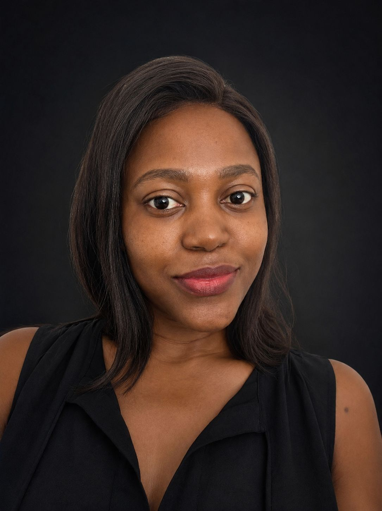

About
Joycenuwa
Joycenuwa is the creative practice of multidisciplinary artist and fashion designer Joyce Aranuwa. Working across photography, digital mixed media and fashion, the practice explores identity, memory, cultural heritage, nature and the evolving relationship between humanity and technology.
Biography
Joyce Aranuwa is a Nigerian multidisciplinary artist and fashion designer based in Nottingham, United Kingdom. Working under the creative identity Joycenuwa, her practice spans photography, digital mixed media and fashion, using each discipline to explore how personal experience, cultural memory and contemporary society shape the ways we see ourselves and the world around us.
Her artistic journey began in fashion, where an early passion for design led her to establish Joycenuwa and present collections at the Nigerian Television Fashion Show, the St Ives West African Fashion Show and the Lagos Fashion and Design Week Fashion Focus selection process supported by the British Council. These experiences established a foundation in storytelling through form, colour and craftsmanship that continues to inform her work today.
Her practice has since expanded into photography and digital mixed media, combining original photography with painterly digital processes to create works that exist between documentation and imagination. Through exhibitions across galleries and artist-led spaces in the United Kingdom, she continues to develop work that connects visual art and fashion through curiosity, experimentation and thoughtful storytelling.
Artist Statement
My practice explores how images can transform ordinary experiences into spaces of reflection. Working across photography, digital mixed media and fashion, I explore identity, memory, cultural heritage, nature and technology, using each discipline as a way of understanding how people connect with themselves, one another and the environments they inhabit.
Photography provides the starting point for much of my work. Rather than documenting reality exactly as it appears, I use digital processes to extend the emotional and symbolic possibilities of an image. Painterly textures and layered compositions allow familiar subjects to move beyond documentation, creating works that exist between observation and imagination.
Nature occupies a central place within my practice. Alongside this, I examine the increasing influence of technology on contemporary life, questioning how artificial intelligence, digital networks and data reshape identity, communication and human experience.
Fashion remains an integral part of my creative practice. Whether creating garments or visual artworks, I approach each project as an opportunity to communicate ideas through thoughtful design, craftsmanship and careful attention to detail.
Art, Data and Technology
Joyce holds a Master’s degree in Data Science, a background that informs her growing exploration of digital art, artificial intelligence and computational systems. Her understanding of data, machine learning and digital technologies provides another lens through which she examines identity, communication and contemporary human experience.
This relationship is visible in works that explore algorithmic interpretation, machine perception and the transformation of people and environments into data. Rather than using technology only as a production tool, she considers how it shapes the way individuals are understood, represented and connected.
As the practice develops, data-led experimentation and digital processes will continue to contribute to new forms of visual storytelling across photography, mixed media and interactive art.
Philosophy
I believe creativity is a way of preserving memory, questioning the present and imagining the future. Whether working with a camera, a digital canvas or fabric, my aim is to create work that encourages curiosity, empathy and meaningful connection while celebrating the beauty that exists within everyday life.

Joyce Aranuwa